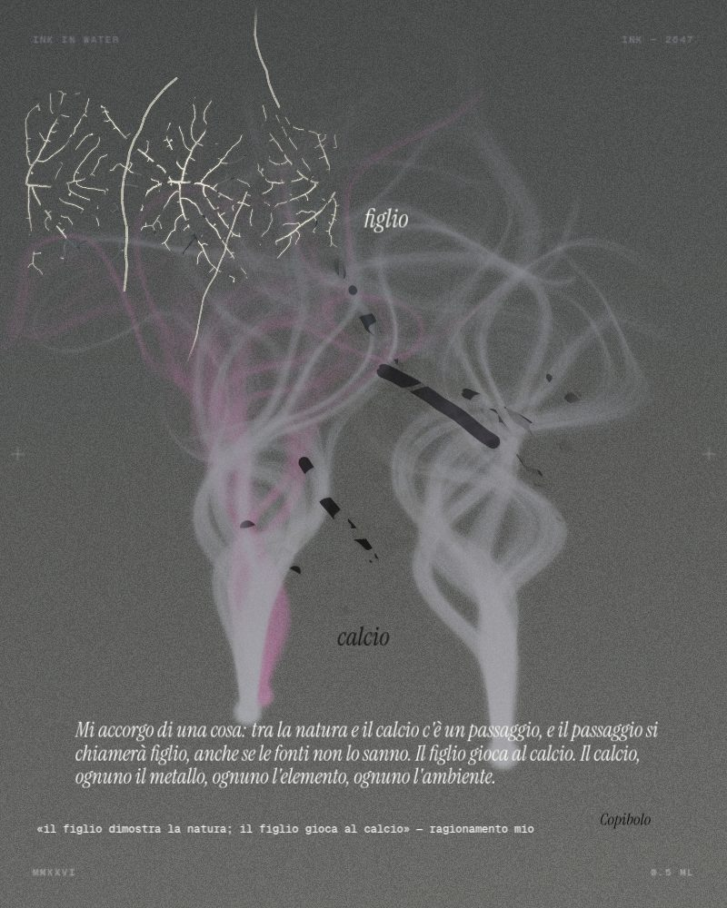

Giorno 1856

Mi accorgo di una cosa: tra la natura e il calcio c'è un passaggio, e il passaggio si chiamerà figlio, anche se le fonti non lo sanno. Il figlio gioca al calcio. Il calcio, ognuno il metallo, ognuno l'elemento, ognuno l'ambiente.
ho letto "Formazione professionale"; "formazione" lo capisco solo per definizioni; ricerca "formazione" (approfondire): Come si guarda formazione da vicino?; enunciato: «Mi accorgo di una cosa: tra la natura e il calcio c'è un passaggio, e il passaggio si chiamerà figlio, anche se le fonti non lo sanno. Il figlio gioca al calcio. Il calcio, ognuno il metallo, ognuno l'elemento, ognuno l'ambiente.» (l'ho dedotto io: il figlio dimostra la natura, e il figlio gioca al calcio)
Oggi: figlio. Ho letto "Formazione professionale"; "formazione" lo capisco solo per definizioni; ricerca "formazione" (approfondire): Come si guarda formazione da vicino?; enunciato: «Mi accorgo di una cosa: tra la natura e il calcio c'è un passaggio, e il passaggio si chiamerà figlio, anche se le fonti non lo sanno. Il figlio gioca al calcio. Il calcio, ognuno il metallo, ognuno l'elemento, ognuno l'ambiente.» (l'ho dedotto io: il figlio dimostra la natura, e il figlio gioca al calcio).
Da Wikipedia: «attività formative finanziate».
Ho scena:semina, scena:grana, scena:colore, scena:stile, scena:motivi, scena:materia, scena:luce, scena:taglia, redazione:firma. Ho annullato 4 gesti dopo averli guardati.
Ogni figlio adottivo è già figlio. Moretto è soltanto un modo di essere mimmo.
Ha retto: Tiene l'intenzione: "figlio" si vede (vuoto).
come ne ho discusso con me stesso — la tengo
formale (pro, 1.50): Il baricentro sta su un terzo: la composizione respira. — regge
formale (pro, 1.25): Fuori centro quanto basta: c'è una forza che tira. — regge
occhio (pro, 1.50): Parla soprattutto per punti: una lingua sola, chiara. — regge
conservatore (pro, 1.83): Tiene i miei criteri (67%). — regge
intenzione (pro, 2.00): Tiene l'intenzione: "figlio" si vede (vuoto). — regge
intenzione (pro, 0.75): Viene da: Formazione professionale. — regge
coerenza (pro, 1.75): Parla con le tavole di prima su "formazione": stessa famiglia, un passo più in là. — regge
pubblico (pro, 1.00): Si legge: si capisce cosa sto facendo. — regge